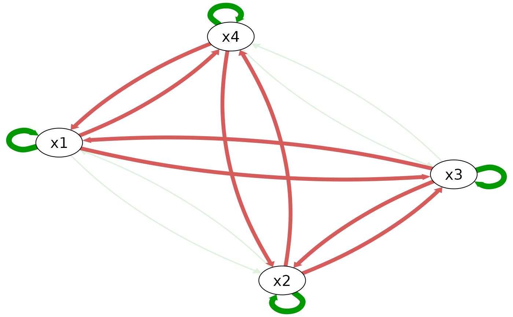

This function generate the true model for the 4-emotion model. It can used to compare the estimated model with the true model, or to plot the true model.
Arguments
- ...
Not in use.
- object
A true_model_4_emo object.
- x
A true_model_4_emo object.
- which
Which model to print out. There are four models in total, corresponding to the four variables.
Methods (by generic)
coef(true_model_4_emo): This function returns the coefficients for the 4-emotion model. It is also used in other functions to generate the linearized version of the true model and to make plots. It returns a list of coefficients for the 4-emotion model, in the same format ascoef.quadVAR()print(true_model_4_emo): This function prints out the true model for the 4-emotion model in the same format asRAMP::RAMP(), to help users to compare the true model and the estimated model.
See also
true_model_4_emo(), compare_4_emo(), quadVAR()
Examples
coef(true_model_4_emo())
#> model effect estimate
#> 1 1 X1 1.50
#> 2 1 X2 0.00
#> 3 1 X3 0.00
#> 4 1 X4 0.00
#> 5 1 X1X1 -0.10
#> 6 1 X1X2 0.02
#> 7 1 X1X3 -0.10
#> 8 1 X1X4 -0.10
#> 9 1 X2X2 0.00
#> 10 1 X2X3 0.00
#> 11 1 X2X4 0.00
#> 12 1 X3X3 0.00
#> 13 1 X3X4 0.00
#> 14 1 X4X4 0.00
#> 15 2 X1 0.00
#> 16 2 X2 1.50
#> 17 2 X3 0.00
#> 18 2 X4 0.00
#> 19 2 X1X1 0.00
#> 20 2 X1X2 0.02
#> 21 2 X1X3 0.00
#> 22 2 X1X4 0.00
#> 23 2 X2X2 -0.10
#> 24 2 X2X3 -0.10
#> 25 2 X2X4 -0.10
#> 26 2 X3X3 0.00
#> 27 2 X3X4 0.00
#> 28 2 X4X4 0.00
#> 29 3 X1 0.00
#> 30 3 X2 0.00
#> 31 3 X3 1.50
#> 32 3 X4 0.00
#> 33 3 X1X1 0.00
#> 34 3 X1X2 0.00
#> 35 3 X1X3 -0.10
#> 36 3 X1X4 0.00
#> 37 3 X2X2 0.00
#> 38 3 X2X3 -0.10
#> 39 3 X2X4 0.00
#> 40 3 X3X3 -0.10
#> 41 3 X3X4 0.02
#> 42 3 X4X4 0.00
#> 43 4 X1 0.00
#> 44 4 X2 0.00
#> 45 4 X3 0.00
#> 46 4 X4 1.50
#> 47 4 X1X1 0.00
#> 48 4 X1X2 0.00
#> 49 4 X1X3 0.00
#> 50 4 X1X4 -0.10
#> 51 4 X2X2 0.00
#> 52 4 X2X3 0.00
#> 53 4 X2X4 -0.10
#> 54 4 X3X3 0.00
#> 55 4 X3X4 0.02
#> 56 4 X4X4 -0.10
plot(true_model_4_emo())

if (FALSE) {
plot(true_model_4_emo(), interactive = TRUE)
}